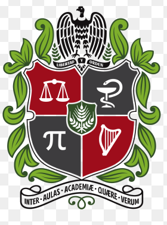

Álvaro Clemente Quijano-Angarita
Statistician | Data Analyst | Developer

About me
🌎 Fulbright Scholar 2021-2023. Statistician and Engineer, pursuing a Master's degree in Biostatistics at the University of North Carolina at Chapel Hill. Experience as Data Analyst, Statistician and Graduate Research Assistant.
Educación
Universidad de Carolina del Norte en Chapel Hill
Máster en Bioestadística
Chapel Hill, NC.

Universidad Nacional de Colombia
Pregrado en Estadística
Bogotá, Colombia.

Universidad Distrital Francisco José de Caldas
Pregrado en Ingeniería Catastral y Geodesia
Bogotá, Colombia.